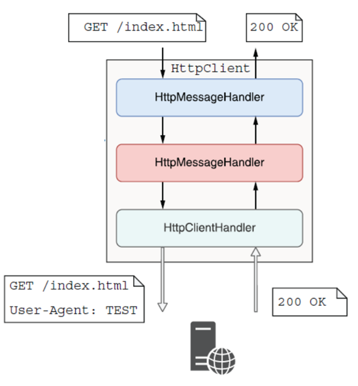

using disposes the httpClient
Many requests at in a short intercal can lead to socket exhaustion
HttpClient was created
HttpClient handler rotation
Dependency Injection (DI)
Each HttpClient contains a pipeline of HttpMessageHandlers
Program.cs
IHttpClientFactory in the controller
Program.cs